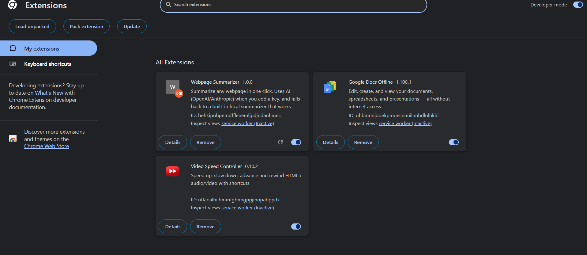
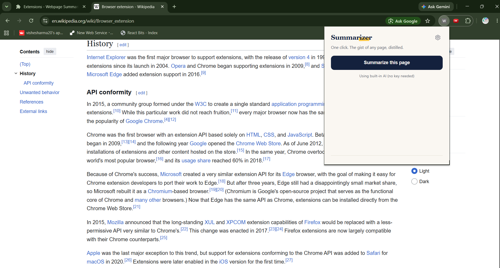
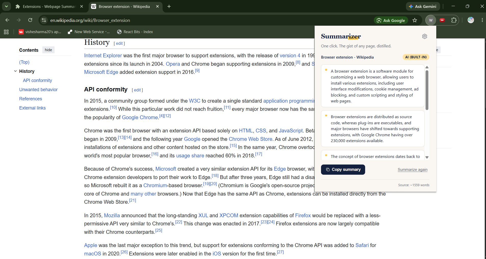
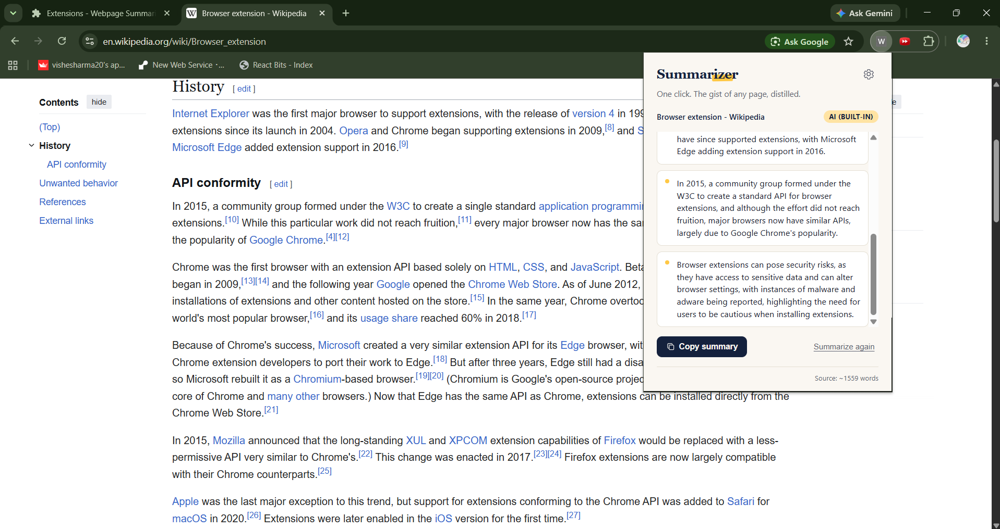
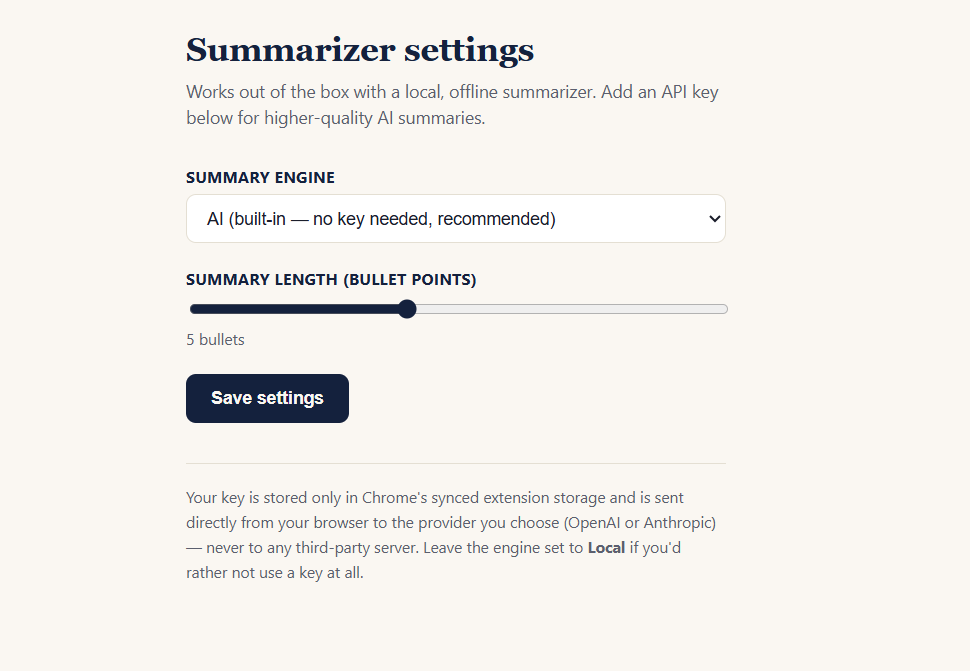
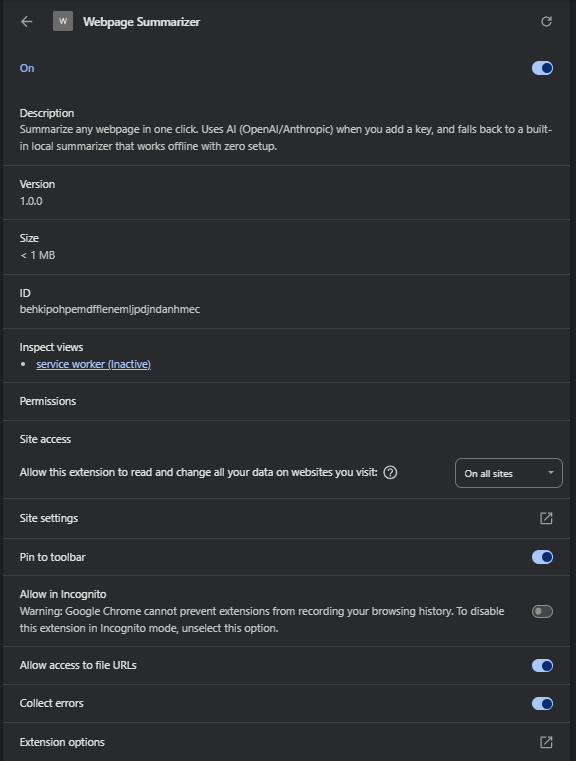

A Chrome extension that turns any webpage into a clean, digestible summary. One click, no fluff.
Paste in some article text below and hit summarize. This calls the exact same AI backend the Chrome extension uses, with no install and no signup required.
Reads the actual article, skipping nav bars, ads, cookie banners, and footers automatically.
Ships with a hosted AI backend so summaries work out of the box, with no API key required from users.
A from-scratch extractive summarization algorithm keeps it working even if the AI backend is unreachable.
Power users can plug in their own OpenAI, Groq, or Anthropic key for unlimited use.






chrome://extensions, enable Developer mode